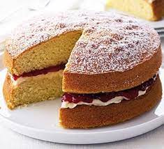

Sponge Cake
This is a classic recipe for a delicous sponge cake. Enjoy!

Ingredients:
- 200g sugar
- 200g butter
- 4 eggs
- 200g flour
- 1 tsp baking powder
- 2 tbsp milk
Steps:
- Heat oven to 190C/fan 170C/gas 5. Butter
two 20cm sandwich tins and line with non-stick
baking paper.
-
In a large bowl, beat 200g caster sugar, 200g
softened butter, 4 beaten eggs, 200g
self-raising flour, 1 tsp baking powder and
2 tbsp milk together until you have a smooth,
soft batter.
-
Divide the mixture between the tins, smooth
the surface with a spatula or the back of a spoon.
-
Bake for about 20 mins until golden and the cake
springs back when pressed.
-
Turn onto a cooling rack and leave to cool completely.
-
To make the filling, beat the 100g softened
butter until smooth and creamy, then gradually
beat in 140g sifted icing sugar and a drop of
vanilla extract (if youre using it).
-
Spread the buttercream over the bottom of
one of the sponges. Top it with 170g
strawberry jam and sandwich the second
sponge on top.
-
Dust with a little icing sugar before serving.
Keep in an airtight container and eat within
2 days.